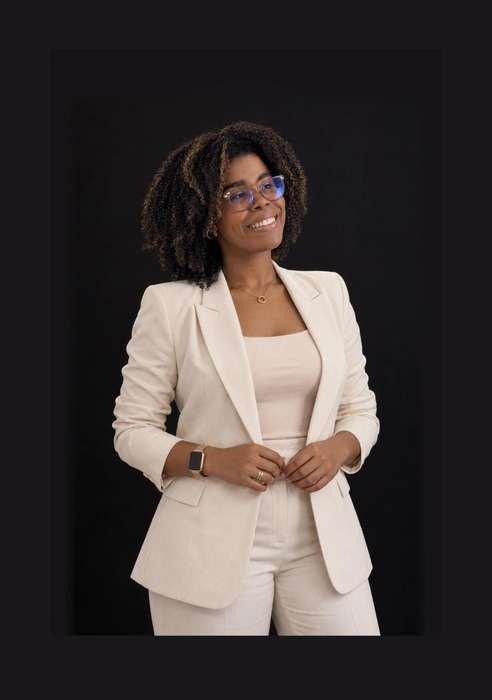

Liskeidy Rosario Pérez
Innovación educativa · Recursos didácticos digitales
Liskeidy Rosario Pérez es licenciada en Matemáticas Orientada a la Educación Secundaria por el INTEC y cursa estudios del Máster en Inteligencia Artificial Aplicada a la Investigación en la UFHEC. Asimismo, continúa su preparación en Investigación e Innovación Educativa en la UCATECI.
Se desempeña como docente de Matemáticas y Ciencias de la Naturaleza en quinto y sexto grado de primaria en la Escuela Pedro Henríquez Ureña. Su experiencia fortalece su interés por diseñar experiencias pedagógicas cercanas a las necesidades de sus estudiantes.
Aspira a dedicarse a la creación de recursos didácticos digitales que combinen pedagogía, tecnología y creatividad para facilitar la comprensión y favorecer una participación activa en el aprendizaje.